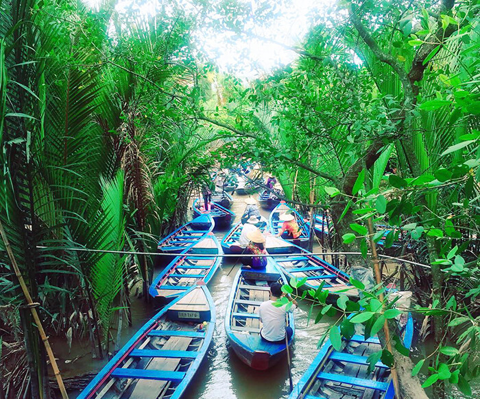
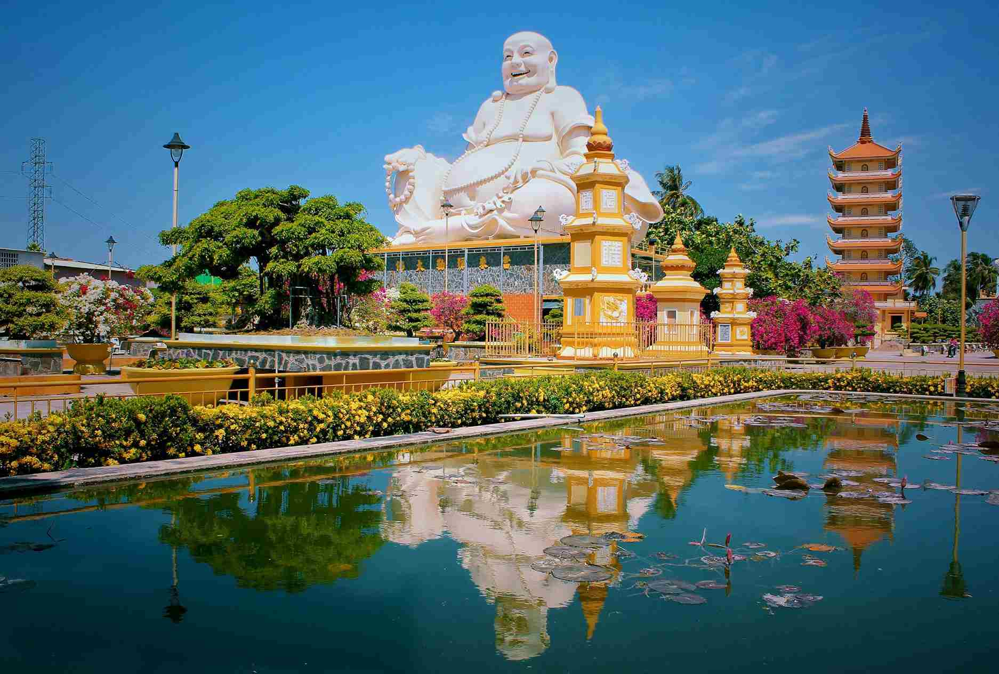
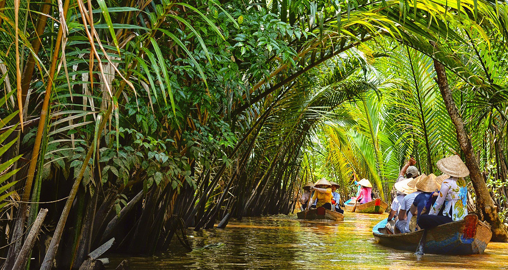
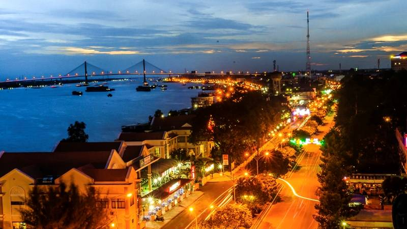
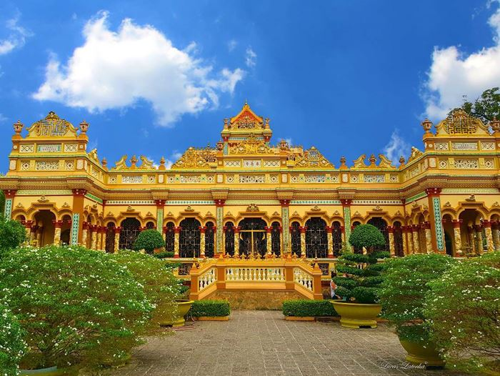
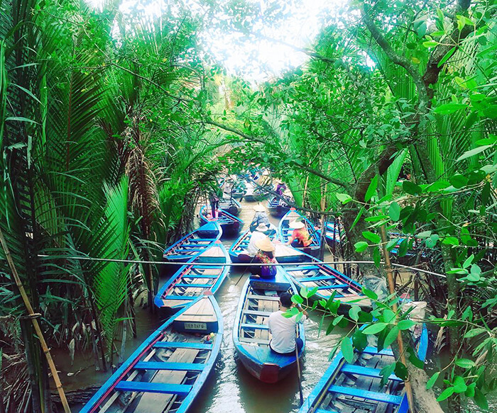
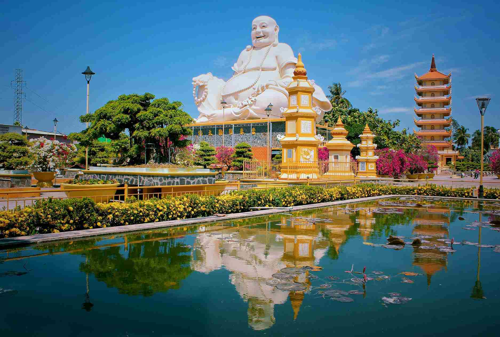
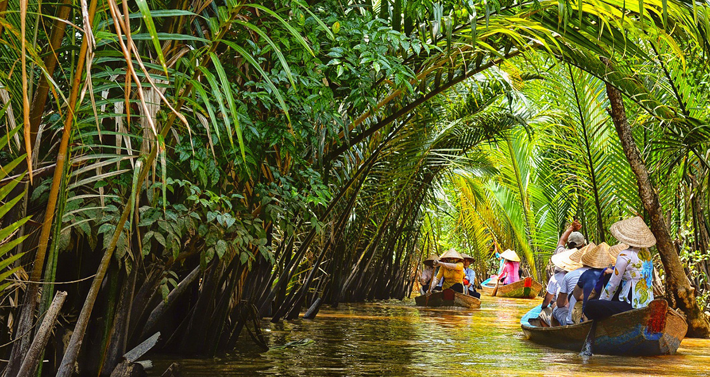
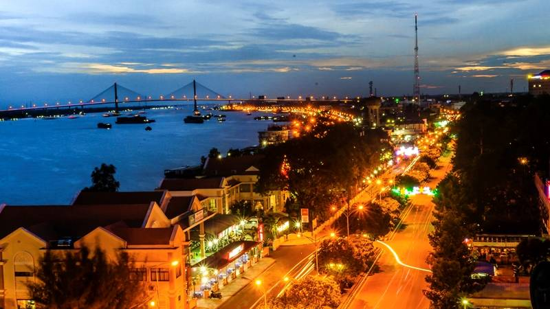
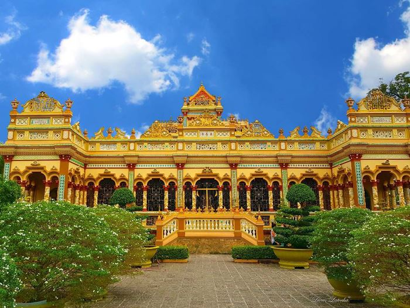

Giới thiệu
Tham gia hành trình khám phá Mỹ Tho - Bến Tre, du khách sẽ được đắm mình trong không gian yên bình của miền Tây sông nước, trải nghiệm đi thuyền trên sông Tiền, nghe đờn ca tài tử, thưởng thức trái cây miệt vườn và tìm hiểu quy trình sản xuất kẹo dừa truyền thống. Đây là chuyến đi lý tưởng để thư giãn, hòa mình vào thiên nhiên và văn hóa đặc trưng Nam Bộ.
Lịch trình
Buổi sáng
Xe và hướng dẫn viên đón quý khách tại điểm hẹn, khởi hành đi Mỹ Tho. Trên đường đi, quý khách nghe giới thiệu về các địa danh đi qua và tham gia các trò chơi vui nhộn trên xe.
Đến bến tàu Mỹ Tho, quý khách lên tàu du ngoạn trên sông Tiền, chiêm ngưỡng Cồn Long, Lân, Quy, Phụng và tham quan lò kẹo dừa, xưởng chế biến thủ công, thưởng thức trà mật ong, bánh mứt và trái cây theo mùa.
Buổi trưa
Đoàn dùng cơm trưa tại nhà hàng với các món đặc sản miền Tây. Sau bữa trưa, quý khách có thể nghỉ ngơi hoặc tự do tham quan, chụp hình tại khu vực nhà hàng ven sông.
Buổi chiều
Tiếp tục chương trình, quý khách ngồi xuồng chèo len lỏi qua những rặng dừa nước xanh mát, tận hưởng không khí trong lành của vùng quê yên ả. Sau đó, đoàn lên tàu trở lại bến và khởi hành về TP.HCM. Kết thúc chuyến tham quan.
Thư viện ảnh
 









Chính sách
- Xe du lịch đời mới, máy lạnh, lái xe thân thiện.
- Hướng dẫn viên nhiệt tình, chu đáo suốt tuyến.
- Vé tàu du ngoạn trên sông Tiền.
- Chi phí tham quan, vào cổng các điểm theo chương trình.
- 01 bữa ăn trưa tại nhà hàng địa phương.
- Trái cây theo mùa, trà mật ong và đờn ca tài tử.
- Khăn lạnh, nước suối 01 chai/người/ngày.
- Bảo hiểm du lịch theo quy định.
- Chi phí cá nhân ngoài chương trình.
- VAT.
- Tiền tip cho tài xế và hướng dẫn viên (tự nguyện).
- Trẻ dưới 5 tuổi: miễn phí, gia đình tự lo ăn uống, chỗ ngồi.
- Trẻ từ 5 – 10 tuổi: 75% giá tour (ngủ chung với ba mẹ).
- Trẻ từ 11 tuổi trở lên: tính như người lớn.
- Hủy trước 5 ngày: không mất phí.
- Hủy trước 3 ngày: mất 50% giá tour.
- Hủy trong vòng 24 giờ: mất 100% giá tour.